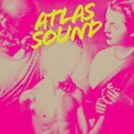
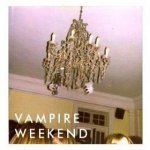

Top 50 Albums of 2008 (Part Two)
The following 25 albums were selected by our writers as our favourite records of 2008. To view the first half of our list, albums #50 to #26, please click here.
As ever, there were several notable casualties and it was particularly disappointing to see a handful of truly great releases missing out (Gang Gang Dance, Max Tundra, Ellen Allien, Parts & Labor, Santogold, The Gutter Twins, I could go on...) but, on the whole, I'm pleased with the diversity and strength of our final fifty. You'll have your own opinions, no doubt, which we fully encourage you to share using the comments facility below. One of the main reasons we do this every December is to encourage debate, so please go ahead and get stuck in; it's always great to hear your thoughts. -- David Coleman, Editor
. . .
“Jim”
(Warp)
Buy it from Insound
Jim is a narrative which captures the attention from the first track to the last. Lidell maintains the 1960s and 70s R&B groove first presented on 2005's Multiply. Another Day stands out amongst a smooth selection of masterfully composed tracks. The intensity varies throughout from the slow All I Wanna Do to the energetic Figured me Out. Nostalgic and modern at the same time, the album never fails the listener. Jamie hits the sweet spot with love-stricken ballads and soulful blues melodies - the sound quality sparkles, and will keep you coming back to Jim long after the catchy tunes have been reluctantly pushed out of your mind. Definitely worthy of the 'best of 2008' hierarchy. (Miguel Morelli)
“We Brave Be Stings and All”
(Kill Rock Stars)
Buy it from Insound
So short, but so sweet, every song here is what a pop song should be. Thao's voice is uniquely dark and breathy in the context of cheerful arrangements, that feature banjo pickin', snare rustlin', and acoustic strummin'. Big Kid Table and Geography are punchy carefree lilts, while songs like Travel leave you wanting to hear that sweet melodic line one more time. Bee Stings is, in Thao Nguyen's own words from Bag of Hammers, "Like a lick of ice cream." (Brett Oronzio)
Abstract hip-hop experimentalist Boom Bip gets together with Super Furry Animal/Welsh Indie Rock Icon Gruff Rhys to do a retro concept album based around the life of John DeLorean. Certainly sounds like fun, sort of a second-string Gorillaz/Deltron deal. Who expected this to be one of the sweetest, most aggressive, saddest, and intoxicating emotional/dance concoctions of the decade? Not myself, but one of the most sublime pleasures is discovery. (George Booker)
The Dodos have a sound all of their own. Lead vocalist Meric Long may at first sound like Death Cab, but it becomes clear this is a little more than radio-oriented pop music. Visiter is the work of two extremely skilled musicians. While sparse, Logan Kroeber's experimental tribal drumming showcases the duo's chops (which are astounding) and is never used in place of melodic ideas. The arresting Fools shows the widths they can reach in their highest aspirations, while Undeclared shows The Dodos can create an affecting folk ditty just as well. (Brett Oronzio)
21. Atlas Sound
“Let The Blind Lead Those Who Can See But Cannot Feel”
(Kranky)
Bradford Cox proved in early 2008 that it was possible to make an introverted self-produced record that was immeasurable expansive, ambitious, and rejuvenated the necessity in modern music to amalgamate all ones influences: in Cox's case from 50's ballads to ambient to 90's alt-rock. Blind... felt like an exorcism, much like all of Cox's projects, turning his inner state outwards. River Card, seems to sum up the record somewhat in one of its highlights – lulling, ambiguous, a melody line that felt like it stretched to infinity – yet always grounded in the roots of US indie rock, with a driving drum and bass track behind it. Blind... was the perfect expression of the Cox the equivocal artist – introverted, extroverted, experimental yet the product of his influences, bold yet modest. Deerhunter may have received all the attention this year, but many will agree that Atlas Sound may have produced one of the greatest debut records in recent memory. (Neil Insh)
 20. Marnie Stern
20. Marnie Stern“This Is It And I Am It And You Are It And So Is That And He Is It And She Is It And It Is It And That Is That”
(Kill Rock Stars)
Original review - Buy it from Insound
Remarkably distinct and chaotically robust, Marnie Stern's second album is a refined variation on her finger-tapped odes to anarchic, sensory madness. Her naïve melodies still cultivate a personal touch and add an appreciated dose of honesty with observations like, "There are dimensions I must enter to see what I am made of." Despite drummer Zach Hill's propensity for free form hammering, he reels it in enough for Marnie to hit some strides with The Crippled Jazzer and the somewhat cherubic Ruler. Otherwise, she is her ever-unpredictable self and we are thankful. (Sean Caldwell)
The companion piece to last year's great leap forward, The Stage Names, might focus on similar lyrical themes, namely those of stardom and fandom, but Will Sheff's songs sound as fresh and incisive as ever. Lost Coastlines, Pop Lie and the slow-burning Blue Tulip are more than a match for anything on The Stage Names, and the glorious finale of Bruce Wayne Campbell is another perfect showcase for Sheff's fascination with outsider figures, in this case the glam-rock nearly man Jobriath. Consistent, intelligent and increasingly prolific, Okkervil River is fast becoming one of the decade's key bands. (David Coleman)
For a two-man band where the drummer trumps the standard by taking on vocal duties, these guys replace with energy what they lack in instruments. A frenzy of peppy distortion and gripping drums – the songs haemorrhage from twinkling guitar parts and ambient whirls into heavy washes of musical syrup. Exclusive of a handful of tracks that side-step the band’s punk beginnings for lo-fi ambient embarkations (including the near ballad Things I Did When I Was Dead, shaped around a bleepy loop) the majority of the songs on Nouns are vigorous runners. Compared to Weirdo Rippers, Nouns is more direct and polished, and it feels that much more like a dip in a rainbow ocean. (Tara Campbell)
It's hard to pin down what Girl Talk's Gregg Gillis is trying to accomplish. Consider this: the massive success of Girl Talk's fourth full-length record, Feed the Animals, is a testament to today's ADD society of short attention spans. In an age when many argue the death of the album, we find in Gillis's expertly crafted DJ mashups further deconstruction, suggesting even the death of the single. With 14 party-minded, dance-ready tracks built of hundreds of samples ranging from the way-too-obscure to the all-too-obvious, the album takes the most important pieces of seemingly every piece of pop music from the last 50 years and streamlines them into 53 minutes of free (Gillis released the record on a "pay what you want" system), copyright infringing ecstasy. With Feed the Animals, Gillis simultaneously exalts and undermines the music sampled, breaking down "pop" into a wickedly ironic science – and its brilliance is undeniable. It's only fitting that Gillis's day job is as a biomedical research engineer. (Conor McKay)
The single word titles (Skeng, Angry, Fuckaz, Warning, Insane, Judgement) give an idea of the focused rage here. The clinical, menacing, dubstep-via-dancehall instrumentals pulverize one into feeling it. And then the the vocals sprinkle it with convincing threat. Kevin Martin only pulls this name out every four or five years, and every time it is a viscerally compelling and shocking experience. Here he has refined it to a pure angry eye. Respond to it. (George Booker)
Fusing some of the prettiest elements of electronic noise with those that are vibrantly abrasive and dense in comparison, Fuck Buttons leave us imbibing their atmospheric anthems as the fuse together isles of sound. The album’s glittering synths give way to visceral bass-driven reverberations; the vocals burst like a hostages from the soundscape. Mixing primitive beats that are fevered with Black Dice-style experimentation; the record at times sounds like the tribal rituals of some psychotic civilization with rhythm sticks. But it’s the cyclical pacing of the record’s interchanging elements and the precise binding of these tonalities that make it epic. Street Horrrsing sounds like the calculated call of a distressed planet seeking solace. (Tara Campbell)
Fennesz's first album since 2004's Venice felt a more delicate, restrained affair. Given the "pop" structure and lusciousness of 2001's Endless Summer and the expansive yet spectral insularity of Venice, this year's Black Sea felt more paced, and cumulative in its build up. However, his pop sense has always been one of the largest contributing factors to his eminence, along with his deftness in creating visceral landscapes that seem to attach themselves to emotion in time and circumstance. These qualities he did not abandon, and by the fifth track Glide it felt that Fennesz was just waiting to release a carpet of melodic sound. By the time of the closer Saffron Revolution we are enveloped in white noise and pure sound, giving way to a tentative, cerebral guitar loop that fades out to black. (Neil Insh)
13. Nick Cave & The Bad Seeds
“Dig!!! Lazarus, Dig!!!”
(Mute)
There's been such an always-the-bridesmaid air to them for years now that Elbow's richly-deserved elevation to national treasures has been one of the most genuine delights of 2008, and what an album they've achieved it with. Lyrically it's outstanding, from the loved-up, grown-up breathlessness of Bones Of You to the crafty vignettery of The Fix, and, given the affectionate reinvigoration the Bury boys perform it with, not to mention Guy's gigantic goosebump of a voice, the whole experience becomes a hug of mountainous proportions, impressive on its first whirl and still improving with every listen even now. (Iain Moffat)
 11. Sigur Rós
11. Sigur Rós“Með suð í eyrum við spilum endalaust”
(EMI / XL)
Original review - Buy it from Insound
2005's Takk... was a beautiful album, subsequently plumbed for a thousand TV trailers. Put next to Sigur Rós' superlative new effort, however, it sounds nearly self-parodic. Með suð... is earthier, stripped back, more genuine somehow. It allows the personality of Sigur Rós to come through in a more organic, honest way, and is a much stronger album for it. First single and buzz-generator Gobbledigook is actually fairly unrepresentative of the record as a whole – try Sud i Eyrum, Festival, or the gorgeous closer All Alright (Jonsi's first song in English) to get a feel for this beautiful album. Sigur Rós may not be aiming quite so high here, but their aim has never been more true. (Alan Garner)
 10. Spiritualized
10. SpiritualizedThis year, Jason Pierce and Co. managed to peel away the layers and refocus their energies in a more direct and powerful way. So nothing lingers in the hypnotic mode of Cop Shoot Cop, but that's ok, because the tunes are tight and immediately appealing and the singing is emotionally bare. The overall impact is less of a head trip but more of a gut punch. Death Take Your Fiddle comes close to a career highlight by exemplifying the new approach; simple, stripped down, naked and honest. Even though he ends up pretty far from the gospel music that clearly influences him, Pierce captures some of that essence on songs like Sweet Talk and Don't Hold Me Close, while wisely refusing to layer the choirs on top and vamp for ten minutes. In the same spirit of economy, the pointless instrumental interludes are mercifully brief and act as a kind of dead space in the grooves between songs. Pierce even throws a perfect garage rock tune in for good measure (Yeah Yeah), so what's not to like? If it's not an oxymoron, this is by far the best non-drug album Spiritualized has ever made. (Alan Shulman)
9. Vampire Weekend
“Vampire Weekend”
(XL)
Original review - Buy it from Insound
It's so easy to hate these snot-nosed Columbia preps. Good rock music isn't supposed to come from an Ivy League school, but songs like A-Punk and Oxford Comma became inescapable this year. Even carrying hype equivalent to that of The Strokes circa 2001, Vampire Weekend managed to deliver a perfect party album for their debut. Some praise their West African influences, but don't be fooled. It's pretty much just a great blend of 1980's new-wave and synth-pop. As jaded music fans we always have to be reminded by bands like Vampire Weekend that pure unabashed fun always reigns supreme. (Brett Oronzio)
 8. The Hold Steady
8. The Hold SteadyOnce an overlooked spin-off of the more glorified indie rock outfit Okkervil River, Shearwater steps out from its sibling's shadow with Rook, its first record on Matador and fifth overall. Rook finds frontman Jonathan Meiburg at his best; his chilling falsetto haunts over brooding lyrics wrought with intensity and emotion. The band's "calm before the storm" aesthetic lends the record an ominous feel, wringing every drop of tension out of each word and note. This may of course be why the 10-track record only clocks in at 38 minutes with one track consisting entirely of menacing feedback – in some ways the music is so dramatic, any more would exhaust listeners. Nevertheless, the album captivates from beginning to end. Opener On the Death of the Waters begins with Meiburg's wistful croon set to mournful piano chords, standing as an aria in some unwritten seafaring opera, powerful and dramatic, only to explode into crashing waves of jagged guitars and thundering drums, huge and cathartic. To close, Shearwater gives us The Hunter's Star, a piano lament full of rich imagery of birds and boughs, sun and moon, and, to come full circle, "waves that close." It's epic. It's theatrical. At time's, it's almost awe-inspiring. (Conor McKay)
 6. Deerhunter
6. DeerhunterThe recording aesthetic Bradford Cox employed in 2008 was split between his solo output with Atlas Sound, and as a unit under Deerhunter. The former became a manifestation of Cox's experimentation, his unrestrained self-expression, his synchronicity with the modern digital age, allowing room to record an entire album yet post continuous new material on his blog. The latter posed more limitations, as can be expected when other permanent musicians are involved. Micro Castle/Weird Era cont., Deerhunter's third full album, was circumscribed by subscription to the category of 'guitar music', perhaps concurrently constrained by the relative freedom of exploration within Atlas Sound. Consequently, Deerhunter successfully emerged as a unified outfit: the personalities of Joshua Fauver and Lockett Pundt are explicit throughout the passage of the record. Pundt's opening duo of Cover Me (Slowly) and Agorophobia established the melodic pop opening, only for the Cox-penned It Never Stops to follow, arguably the album's best track. Fauver's bass-driven kraut rock anthem Nothing Ever Happened reopened proceedings for the second half, succeeding the quiet introspection of Calvary Scars and Green Jacket, necessary to maintain the dynamics of Micro Castle. Deerhunter managed to be experimental and imaginative enough to reinforce the strength of their songs, making a record that matched the quality of Atlas Sound's Let the Blind..., whilst Weird Era proved that the band had enough strong material to make yet another record. Where Atlas Sound's recording freedom (Cox records on his laptop on tour) allowed creative emancipation, Deerhunter's studio limitation (recorded in one week) pressurised them into making a record that was inspired by constrictions, yet reinforced by collaborative songwriting reciprocation. (Neil Insh)
 5. TV on the Radio
5. TV on the RadioIt's a rare phenomenon when a work of art manages to be accessible, significant, likeable, brilliant and extremely well-constructed at the same time. Think of many a Pixar film. This year's WALL-E was a great night out for kids and general public, but movie buffs had their minds equally blown at the plotting, cleverness and unexpected quirks. Another entry in the short list of these types of works is TV on the Radio's Dear Science, and in this respect it's radically different from their previous Return to Cookie Mountain. The latter was an acquired taste: some loved it, some just didn't know what to do with it. With Dear Science, they've created a record that anyone can enjoy. The record's as accessible as anything this year, and tracks like Crying, Golden Age and DLZ take little time to warm up to. But look deeper, even those tracks are heavily layered, expertly constructed and are just a marvel of structure and writing. They are equally substantial as the 'harder' mindblowers. Stork & Owl is built a dance like track, putting just layers and layers of choirs, strings and synths upon each other. Lover's Day is just about the best song about sex ever made, even though the carnival stomp may set you off at first. But all the brilliance in the record is really centered around a single entry of about five-and-a-half minutes. Love Dog is a song so dense, so layered, so mind-blowing and so divine that it sounds like something you'd hear in heaven. I dare you to make a list of all audio tracks crammed into the song. By the time you're done, the gents will have another record out. (Japie Stoppelenburg)
No Ripcord made M83's breakthrough Dead Cities... our album of the year what seems like an age ago now, and rightly so: it was an album that restored a sense of the human to electronic pop music while also appealing to anyone who'd grown up on the layered guitar excess and feedback pop of My Bloody Valentine. Then, for a couple of albums, like Allison in The Breakfast Club, Mr Gonzalez went all difficult and unfriendly on us. Saturdays = Youth is the album of our requited love, a modern soundtrack to the perfect 80s high-school flick, with Kate Bush, Genesis, late Bee Gees and even a bit of Depeche Mode thrown into a clunky retro blender. It still has the bird noises and multiple synths we'd expect, but the sensibility is of pure bubblegum pop, particularly in the Frenchified and charmingly naïve lyrics. It's a relentlessly summery, upbeat album that perfectly suited a year so lacking in any other reasons for cheer. I'm even willing to overlook some highly questionable Skins-meets-Barely Legal artwork and instead put Graveyard Girl, my song of the year, on repeat again and again and again. (Ben Bollig)
 3. Bon Iver
3. Bon IverBon Iver's Justin Vernon was the poster-child of Indiedom in 2008. Late last year, he emerged from a Thoreau-like immersion into nature and reflective isolation that yielded his debut, For Emma. His story was not so much novel as much as it encapsulated a zeitgeist. After all, weren't we looking for a young, talented, little-known, Midwesterner with a grass-roots following and an internet-savvy, DIY work ethic? Weren't we looking for someone to inspire us with thoughtful, intense, and at times cathartic performances? Did we not seek someone with the ability to draw in supporters of all persuasions; from the East-coast psych-folkers to the Southern alt-country rockers, the Heartland post-rockers, the West-coast noise-rockers and hell, even a few thousand soccer moms for good measure? Perhaps, for just a moment, For Emma made you remember what it was like to be vulnerable and unguarded by a shroud of cynicism. Sometimes it doesn't hurt to have perfect timing.
 2. Portishead
2. PortisheadAfter Massive Attack and Tricky, Portishead have fallen in line to complete the Bristol trinity by offering a Third album which is a masterpiece shattering any comfortable expectations about what downtempo, Bristol music, or trip-hop is supposed to be. The Portishead outcasts just took an extra decade, convinced us all they were no more, and completely revised their aesthetic to really creep the fuck out of us, as if the ghosts of Mezzanine and Angels With Dirty Faces weren't scary enough. In coming back, Portishead reintroduced an emotional vitality and edginess with a purpose into buzzy indiepop circles that had gotten sick with dizziness from chasing their own tails. And Magic Doors is entry number two in the vaginal metaphor torch song hall of fame Beth Gibbons created 14 years ago with Glory Box. (George Booker)
 1. Fleet Foxes
1. Fleet FoxesIt's a testament to the appeal of this young band from Seattle that even if you discount the vast number of votes its companion EP, Sun Giant, received, the stunning Fleet Foxes was way out in front in our poll. If you heard it, Fleet Foxes was most likely your soundtrack to the second half of 2008; even a lukewarm review on this very site couldn't hold these guys back. Seemingly disparate influences such as folk, psychedelia, Sacred Harp singing, and the Beach Boys meshed together in a startlingly effective way and vocally, well, nothing even came close. To cap it off, seeing Fleet Foxes live made for pretty much the best ninety minutes of my year. (David Coleman)
. . .
So that's our Top Fifty Albums of 2008 all wrapped up. Coming up next are the individual writer lists and the results of our inaugural Readers' Poll. Until then, why don't you let us know what you think of our picks by commenting below? Feel free to be as complimentary or abusive as you like. We can take it.
16 December, 2008 - 00:00 — No Ripcord Staff